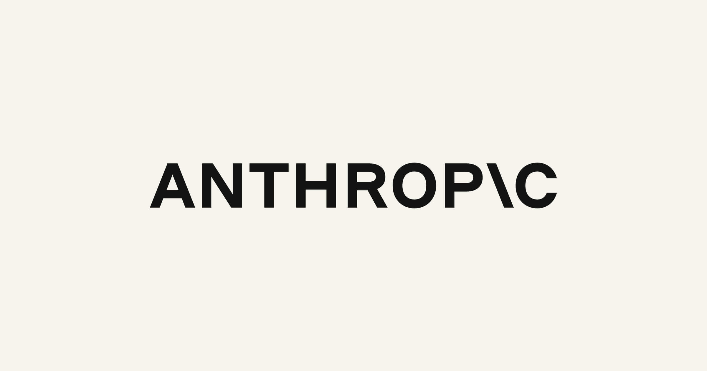

一、导语：一份赚钱的财报，和一个不受欢迎的增速
Anthropic 在旧金山的一场非公开会议上，向潜在投资者交出了第三季度成绩单：营收 168 亿美元，环比增长约 45%，是 2025 年全年营收（约 46 亿美元）的 3.6 倍。同一份材料里还有两个过去很少见的数字——年内调整后营业利润率 11%，现金流为正，第三季度每花 1 美元算力就能换回 1.70 美元收入。
按常理，这是一家正在从"烧钱换增长"转向"增长带利润"的公司。但路透社援引四名知情人士的说法称，部分现有投资者和准备参与 IPO 的投资者，在看到数据后开始考虑把上市估值从约 2 万亿美元下调到 1.5 万亿美元左右。原因很简单：Q2 的环比增速还是 140% 以上，Q3 掉到了 45%。
二、背景分析：从 9650 亿到 2 万亿，只用了五个月
要理解这次估值回调的分量，得看这条曲线有多陡。今年 5 月，Anthropic 的私募估值还在 9650 亿美元；两年前，这个数字不到 200 亿美元。Claude Code 在开发者群体里的爆发，把它推上了"下一个万亿美元公司"的叙事，投行甚至放出过 2 万亿美元的 IPO 定价设想。
时间表也定得很紧。据 The Information 报道，Anthropic 计划在 11 月、感恩节之前挂牌，这将是 AI 热潮迄今最大的一次公开市场检验。换句话说，它必须在几周内让一群刚刚被增速吓到的机构，接受一个仍然高得离谱的价格。
外部环境也不配合。通胀仍未回落，借贷成本在上升，公众对 AI 的情绪偏负面的比偏正面的多；与此同时，OpenAI 在 9 月推出 Astra 正面抢市场，Google 与一批开放权重模型持续压价。一个高速增长的故事突然需要靠"单位经济模型"来讲，这是估值逻辑的切换，不是一次普通的财报波动。
三、核心内容：168 亿美元里，藏着哪些真实数字
把这份材料拆开看，有几组数字值得单独拎出来：
- 营收 168 亿美元，环比 +45%。换算下来，Q2 约为 116 亿美元。对比 2025 年全年 46 亿美元，一年半时间规模翻了近四倍。
- 调整后营业利润率 11%。这是连续第二个季度实现调整后盈利，但口径不含股权激励等大项，也不含训练算力的资本开支——离会计意义上的盈利还有距离。
- 每 1 美元算力换 1.70 美元收入。这是全场最有说服力的一个数：它说明在价格战打了大半年之后，前沿模型的推理业务本身是可以赚钱的。
- 蒸馏收入占 5%–7%。Anthropic 估算有 5% 到 7% 的收入来自其他公司用 Claude 输出训练自家模型。公司近期开始封锁这类"模型盗窃"，这意味着这部分收入会在本季度明显下滑。

真正让投资者犹豫的不是绝对值，而是"没说的部分"。据 The Decoder 报道，Anthropic 在这场会议上没有披露 9 月的年化收入运行率，也没有给出全年指引。对一家准备在几周后定价的公司来说，这种沉默本身就是信号——要么数字不好看，要么波动大到不敢承诺。
公司给增长放缓找了一个季节性解释：夏天人们工作更少、消耗的 token 更少。这个说法有几分道理，但没法解释为什么投行会把估值预期一次性下调四分之一。
四、各方反应：从投资者日到 CoreWeave 的股债双杀
反应最快的是二级市场。IT之家援引路透社的报道提到，随着 AI 融资成本攀升引发担忧，AI 基础设施企业、芯片制造商以及向 AI 公司出租算力的新兴云厂商都受到冲击，获得英伟达投资的 CoreWeave 在周四出现股价与债券价格同时大跌。市场担心的不是 Anthropic 一家公司，而是整条靠债务融资堆起来的算力链。
「短期内 AI 市场的表现，很大程度上取决于 Anthropic 能否顺利上市，以及随后 OpenAI 能否在明年上市。」
投资端的情绪可以概括为"认可生意、怀疑价格"。11% 的调整后利润率和 1.70 的算力回报率，证明 Claude 不是纯烧钱的生意；但 45% 的增速配上 2 万亿美元的定价，对应的市销率仍然远超任何一家成熟软件公司。部分投资者的态度是：可以买，但要便宜四分之一。
竞争侧的对照同样刺眼。OpenAI 的 Astra 在 9 月上线后直接分流了企业客户；DeepSeek、Kimi、StepFun 这批开放权重模型把同等能力的调用价格压到另一个量级；Meta 刚把 816B 的 Muse Spark Open 开源，进一步压低了"前沿能力"的市场价。Anthropic 的高毛利，恰恰建立在它还能守住能力差距这件事上。
五、深度解读：AI 估值从"增速定价"转向"利润定价"
第一层，是定价锚点的变化。过去两年，AI 公司的估值几乎只看一条曲线——收入增速。140% 的环比意味着"再多贵都有人接"；45% 则意味着必须回答另一个问题：增长停下来之后，这家公司靠什么赚钱？Anthropic 给出的答案是 11% 的调整后利润率和正的现金流，这在整个行业里已经是稀缺品，但距离支撑 2 万亿美元还差得远。
第二层，是 IPO 的示范效应被放大。Anthropic 是这一轮 AI 公司里第一个真正走向公开市场的大型实验室，它的定价会成为 OpenAI、xAI 乃至一众基础设施公司的参照系。定价低了，一级市场的账面估值要集体重估；定价高了，破发会直接冻结后续融资窗口。所以这场 IPO 的博弈，参与者远不止 Anthropic 的股东。
第三层，是封锁蒸馏的短期代价。5%–7% 的收入来自被"抄"的过程，停掉它等于主动放弃一块毛利，换来的是对手追赶速度变慢。这是一笔用当期报表换长期护城河的交易——也解释了为什么本季度数字可能比 Q3 更难看。
还有一层容易被忽略：Anthropic 的招股书把 AI 的经济影响类比为"超过工业化、电力和互联网"。这种叙事在路演里能撑住溢价，但在利率高企、公众情绪转负的窗口里，它同时也是最容易被打折的部分。估值从来不是算出来的，是讲出来再被市场砍价的。
六、总结
一句话：Anthropic 用 168 亿美元营收和 1.70 的算力回报率证明了自己是门好生意，却用从 140% 掉到 45% 的增速证明它不是一台永动机——11 月的 IPO 定价，将决定市场愿意为"AI 已经能赚钱"这个故事付多少溢价。